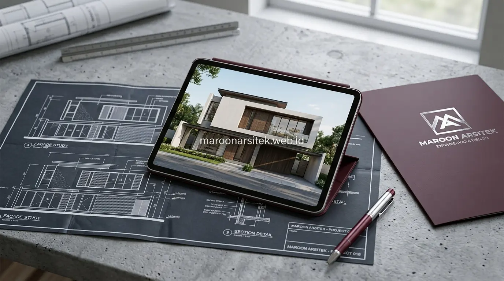

Kekecewaan klien sering muncul ketika hasil bangunan terlihat berbeda dari visualisasi 3D yang telah disetujui, biasanya akibat ketidaktepatan eksekusi di lapangan yang tidak terkontrol secara ketat. Bersama layanan jasa kontraktor rumah dari Maroon Arsitek, seluruh proses rancang bangun dipandu standar operasional yang ketat agar hasil akhir fasad rumah minimalis benar-benar sesuai gambar 3D yang disepakati.
Kontrol Dimensi pada Elemen Garis dan Bidang Fasad Minimalis
Fasad rumah minimalis sangat bergantung pada ketepatan garis dan bidang datar, sehingga kontrol dimensi pada setiap elemen struktural dan finishing perlu dilakukan secara ketat agar kesan bersih dan presisi pada desain 3D benar-benar tercapai di bangunan nyata. Karakter desain minimalis membuat sedikit saja penyimpangan dimensi terlihat jelas secara visual.
- Pengukuran Berulang: Dilakukan pada setiap tahap, mulai dari bekisting pengecoran struktur hingga plesteran dinding bata.
- Alat Ukur Laser Modern: Menggunakan *laser level* dan *theodolite* untuk menjamin kesikuan sudut 90 derajat sempurna di setiap sudut fasad.
- Standar Konsisten: Mencegah terjadinya perbedaan ketebalan atau kemiringan bidang antara sisi depan dan samping bangunan pada desain rumah minimalis modern.
Pemeriksaan Kesikuan dan Kerataan Sebelum Finishing Fasad
Kebutuhan hasil fasad yang presisi dijawab melalui pemeriksaan kesikuan dan kerataan bidang dinding sebelum tahap finishing dimulai, sehingga potensi ketidaksesuaian dapat dikoreksi lebih awal tanpa memengaruhi tampilan akhir fasad.
Pemeriksaan pada tahap ini mencegah masalah yang lebih sulit diperbaiki setelah lapisan finishing terpasang, terutama pada elemen fasad minimalis yang mengandalkan bidang datar sebagai karakter utama desainnya.
Realisasi Proporsi Bukaan Jendela sesuai Visualisasi 3D
Proporsi bukaan jendela pada desain 3D perlu direalisasikan dengan ukuran dan penempatan yang tepat di lapangan, karena perubahan sedikit saja pada dimensi bukaan dapat mengubah keseimbangan visual keseluruhan fasad minimalis yang telah dirancang. Ketepatan ini menjadi salah satu tantangan teknis dalam realisasi desain minimalis.
Koordinasi antara tim struktur dan tim pemasangan kusen dilakukan sejak awal untuk memastikan lubang bukaan pada dinding sesuai ukuran kusen yang akan dipasang, menghindari penyesuaian mendadak yang dapat mengurangi presisi hasil akhir.

Koordinasi Tim Struktur dan Pemasangan Kusen di Lapangan
Kebutuhan sinkronisasi antara pekerjaan struktur dan pemasangan kusen dijawab melalui jadwal kerja yang terkoordinasi, sehingga lubang bukaan pada dinding disiapkan sesuai ukuran kusen sebelum tahap pemasangan dilakukan pada proyek jasa bangun rumah dari nol.
Koordinasi ini mengurangi risiko ketidaksesuaian ukuran yang mengharuskan pembongkaran ulang sebagian dinding, yang dapat memperlambat jadwal dan menambah biaya di luar rencana awal.
Kontrol Kualitas Finishing untuk Hasil Akhir yang Konsisten
Kontrol kualitas pada tahap finishing memastikan seluruh permukaan fasad, mulai dari cat, material pelapis, hingga sambungan antar elemen, memiliki hasil akhir yang konsisten sesuai standar yang ditetapkan dalam gambar kerja. Tahap ini menjadi penentu akhir kesesuaian hasil bangunan dengan visualisasi 3D yang telah disepakati.
Pemeriksaan dilakukan pada setiap segmen fasad sebelum dinyatakan selesai, mencakup kerataan warna cat, kelurusan sambungan material, dan kebersihan detail pada sudut-sudut bangunan yang menjadi titik perhatian utama desain minimalis.
Evaluasi Akhir Sebelum Serah Terima kepada Klien
Kebutuhan kepastian hasil akhir dijawab melalui evaluasi menyeluruh yang membandingkan kondisi fasad terbangun dengan gambar 3D awal, sebagai tahap validasi terakhir sebelum proyek dinyatakan selesai kepada klien bersama tim jasa desain arsitek kami.
Evaluasi ini memberikan kesempatan untuk melakukan perbaikan minor pada detail yang belum sepenuhnya sesuai, sebelum klien menerima hasil akhir bangunan secara resmi.